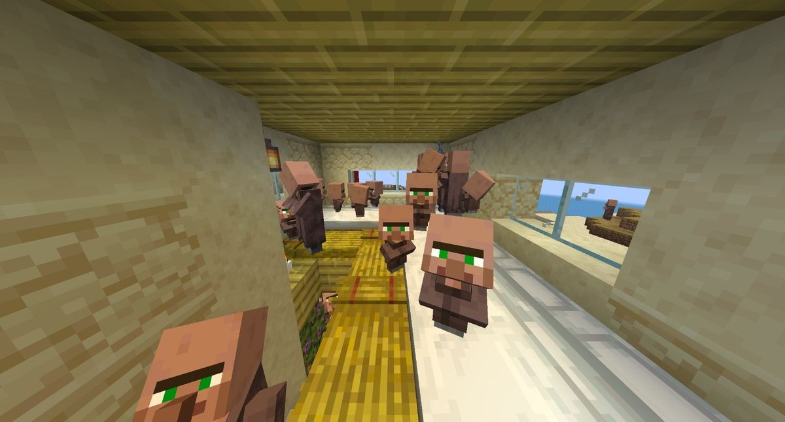

Inside one Brooklyn house

Yes, it is really this full. 10 homes, 40 beds, 40 people: not one free bed.
Solara at a glance
Population: 40 (36 adults, 4 kids)
Districts: Brooklyn (desert) and Maikuduk (jungle)
Economy: mixed
Government: Island Council of 5
Problem card: Population and Consumption
Team: Common Ground

Goal 1
Food and water for everyone

Goal 2
Freedom to work, trade and own a home

Goal 3
Save nature for the next generation